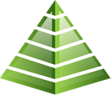

2016
aRway
Min resa inom arkitektur började här.
Certifierad kravingenjör som arbetar med verksamhetsarkitektur. Jag hjälper organisationer med förändring genom att skapa en brygga mellan IT och verksamhet.
Min resa inom arkitektur började här.
Jag fördjupade inom UAF.
Nutid.
C3K blev förvärvade av RDS och jag arbetar inom samma projekt. Se nedan.
Jag var en del av ett större förändringsprojekt inom Försvarsmakten via FMV.
Hjälpte verksamheter med deras arkitekturmiljöer, främst konfigurering och dokumentgenerering men även workshops och modellering.
 Kungliga Tekniska
Högskolan
Kungliga Tekniska
HögskolanJag utförde laborationsarbete, bland annat att tillverka och mäta effective refractive index av waveguides.
Jag var under en termin vikarierande lärare för årskurs sju på Edsbergsskolan i Sollentuna.
 Solid
Engineer
Solid
EngineerJag jälpte kunder med att utveckla sina CAD-miljöer med verktyg ur Dassault Systems portfölj.
Kungliga Tekniska
HögskolanJag uppdaterade dokumentation kring diverse laborationsuppgifter. Instruktioner för både handledare samt deltagare och tillhörande uppgifter.
Jag uppdaterade dokumentation kring diverse laborationsuppgifter. Instruktioner för både handledare samt deltagare och tillhörande uppgifter.
Kungliga Tekniska
HögskolanMaster thesis: Narrow Linewidth All-fiber Cavity Thulium Fiber Laser at 2 µm - DiVA-länk
Kungliga Tekniska
Högskolan-